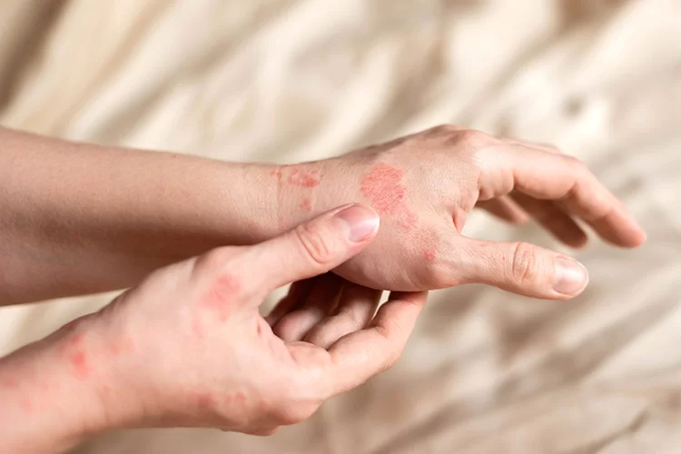
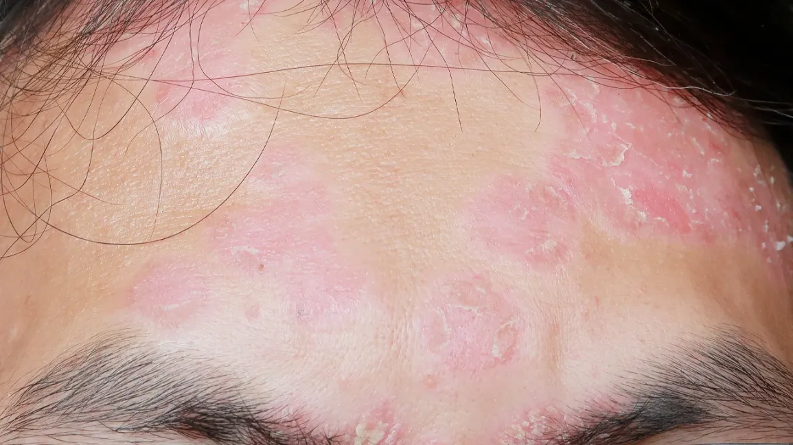
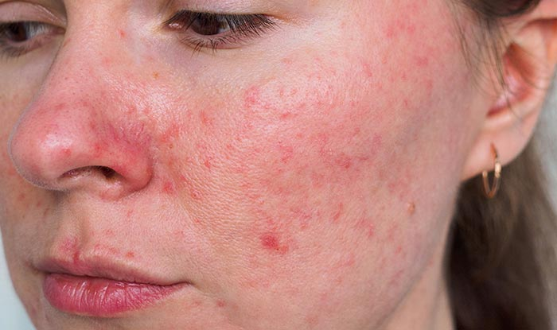
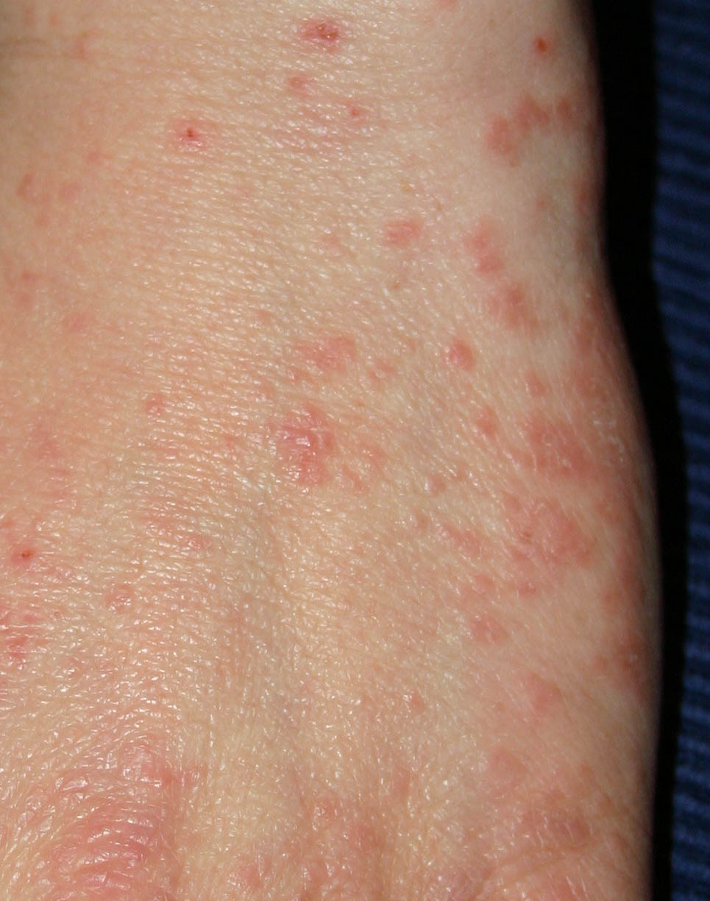
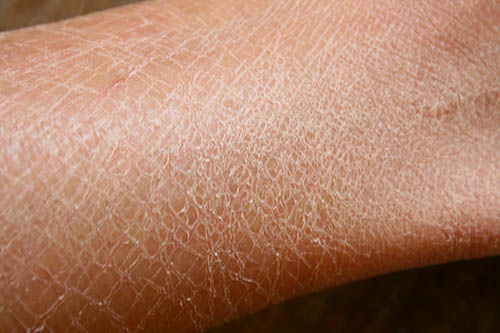

Skin diseases are common conditions that affect the health and appearance of the skin. Understanding the causes, symptoms, and treatments is the first step toward managing and curing these skin conditions. Explore different skin diseases and learn how to manage or treat them effectively with proper care, preventive measures, and available treatments. Let us guide you to clearer, healthier skin!
Atopic Dermatitis

Atopic Dermatitis, commonly known as eczema, is a chronic inflammatory skin condition characterized by dry, itchy patches. It often begins in childhood and can affect any age. It results from a combination of genetic, environmental, and immune factors.
Symptoms: Red, itchy rashes, often on the hands, feet, and face.
Prevention: Keep skin moisturized and avoid known irritants.
Treatment: Moisturizing creams, corticosteroids, and antihistamines.
Hives (Urticaria)
Hives, or urticaria, are raised, itchy welts on the skin caused by allergic reactions, infections, or stress. They can appear suddenly, often accompanied by swelling.
Symptoms: Raised, red, itchy welts that appear and fade quickly.
Prevention: Avoid triggers such as certain foods or medications.
Treatment: Antihistamines and corticosteroids to reduce inflammation.
Psoriasis

Psoriasis is a chronic autoimmune skin condition that leads to rapid skin cell production, causing thick, red patches covered with silvery scales. Triggers include stress and certain medications.
Symptoms: Thick, red patches of skin with silvery scales.
Prevention: Reduce stress, keep skin moisturized.
Treatment: Topical treatments, phototherapy, and immune-suppressing medications.
Rosacea

Rosacea is a chronic skin condition characterized by facial redness, visible blood vessels, and small, pus-filled bumps. It commonly affects the cheeks, nose, and forehead.
Symptoms: Facial redness, visible blood vessels.
Prevention: Avoid triggers like alcohol and spicy foods.
Treatment: Antibiotics, topical creams, and laser therapy.
Scabies

Scabies is a contagious skin infestation caused by mites, leading to intense itching and red rashes.
Symptoms: Intense itching and pimple-like rashes.
Prevention: Avoid contact with infected individuals.
Treatment: Prescription creams or lotions to eliminate mites.
Xerosis (Dry Skin)

Xerosis, or dry skin, is characterized by rough, flaky, and itchy skin, often due to low humidity or excessive washing.
Symptoms: Dry, flaky skin with itching and cracking.
Prevention: Regular moisturizing and avoiding hot showers.
Treatment: Emollient creams and avoiding harsh soaps.